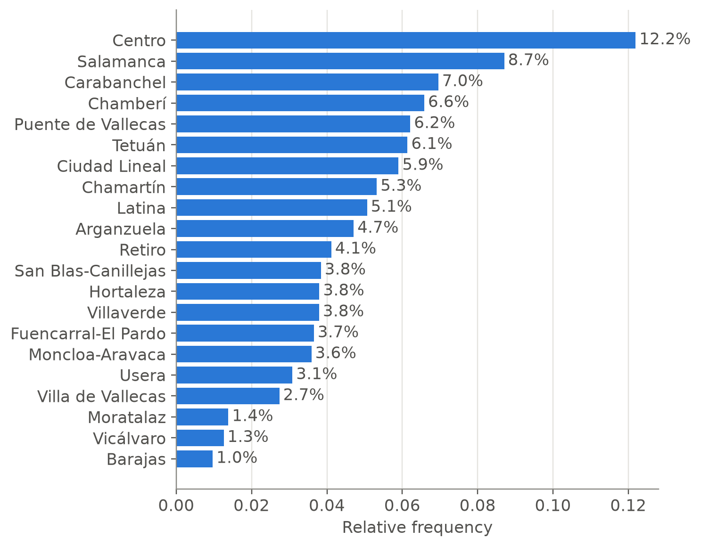
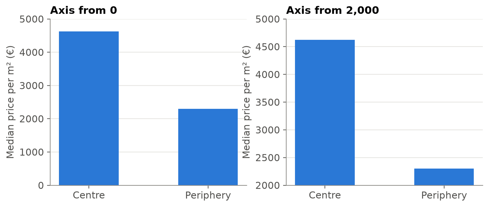
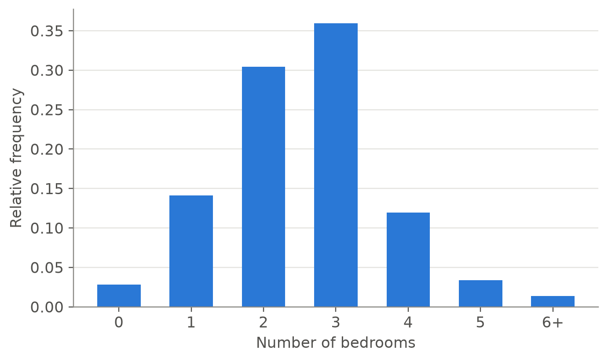
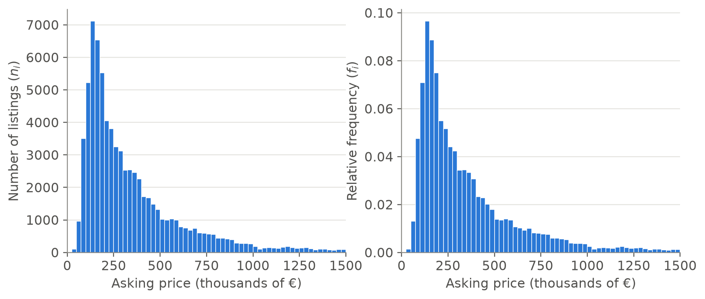

In this topic we study one variable at a time. The aim is to summarise the observations \(x_1, x_2, \dots, x_n\) of a variable \(X\) with tables, graphs and a few numbers that describe how the data are distributed. The topic has four parts:
Build and interpret frequency tables (absolute, relative and cumulative) for qualitative and quantitative variables, including data grouped into classes.
Choose and draw the right graph for each type of variable (bar chart, histogram, empirical distribution function, boxplot), and recognise graphs that distort the data.
Define and compute measures of centre, position, dispersion and shape, prove their main properties and know which ones are sensitive to outliers.
Compute quantiles and moments from grouped data, and know how linear and monotone transformations affect the summaries.
We work with the dwellings for sale in Madrid in 2018 and the variables described in Topic 1. Each row is a listing.
A Polars DataFrame is a table: each column is a variable and each row an individual (here, a listing). Almost everything we do consists of selecting columns (pl.col(...)) and computing something on them.
Qualitative data
Frequency table
Let a qualitative variable \(X\) with categories \(c_1, \dots, c_k\) be observed on \(n\) individuals.
NoteDefinition
Absolute frequency\(n_i\): number of observations in category \(c_i\). Then \(\sum_{i=1}^k n_i = n\).
Relative frequency\(f_i = n_i / n\): proportion of observations in category \(c_i\).
The set of pairs \(\{(c_i, n_i)\}_{i=1}^k\), or \(\{(c_i, f_i)\}_{i=1}^k\), is the frequency distribution of \(X\).
Proof. Each of the \(n\) observations belongs to exactly one category, because the categories are mutually exclusive and exhaustive. Counting the observations category by category therefore counts each of them once, so \(\sum_i n_i = n\). Dividing by \(n\) gives \(\sum_i f_i = 1\), and the bounds follow from \(0 \le n_i \le n\).
The two conditions on the categories, mutually exclusive (no observation in two categories) and exhaustive (every observation in some category), are what make a frequency table valid. A table of “features” (lift, terrace, parking…) does not satisfy them, because a dwelling can have several features or none.
Table 1: Frequency distribution of the district of the listings.
district
n_i
f_i
Centro
9233
0.122
Salamanca
6594
0.087
Carabanchel
5268
0.070
Chamberí
4986
0.066
Puente de Vallecas
4704
0.062
Tetuán
4649
0.061
Ciudad Lineal
4468
0.059
Chamartín
4031
0.053
Latina
3836
0.051
Arganzuela
3566
0.047
Retiro
3117
0.041
San Blas-Canillejas
2908
0.038
Hortaleza
2877
0.038
Villaverde
2872
0.038
Fuencarral-El Pardo
2767
0.037
Moncloa-Aravaca
2717
0.036
Usera
2335
0.031
Villa de Vallecas
2074
0.027
Moratalaz
1047
0.014
Vicálvaro
954
0.013
Barajas
732
0.010
Centro, the historic centre, has the most listings, about one in eight. This does not mean that it has the most dwellings: the table describes the dwellings for sale, and the share of dwellings that are on the market can differ from one district to another.
Bar chart
A bar chart draws each category as a bar whose length is proportional to its frequency. For nominal variables the bars should be sorted by frequency, because the categories have no natural order.
fig, ax = plt.subplots(figsize=(6, 6))ax.barh(district_table["district"], district_table["f_i"], color=COLORS["blue"])ax.invert_yaxis() # most frequent category at the topax.set_xlabel("Relative frequency")ax.grid(axis="x"); ax.grid(axis="y", visible=False)for y, f inenumerate(district_table["f_i"]): ax.text(f +0.001, y, f"{f:.1%}", va="center", color=COLORS["ink_soft"])plt.show()

Figure 1: Bar chart of the district of the listings (relative frequencies).
WarningWhat about pie charts?
Pie charts are very popular, but we compare angles and areas much less accurately than lengths on a common scale, as shown experimentally by Cleveland and McGill (1984). With more than two or three categories, a bar chart shows the same information more clearly.
Figure 2: Pie charts of the condition of the dwelling (3 categories) and of the district (21 categories).
With three categories, one of them clearly dominant, the pie chart works: at a glance, about four out of five listings are second-hand dwellings in good condition. With 21 districts it does not: many slices have similar sizes, colours repeat, and the labels of the smallest slices are hard to read. Try to answer from the pie which district has more listings, Latina or Arganzuela, and then check the bar chart of Figure 1.
NoteHistorical note: the first bar and pie charts
Both graphs were invented by the Scottish engineer and economist William Playfair. The bar chart appeared in his Commercial and Political Atlas (1786), to show Scotland’s trade with its partners, and the pie chart in his Statistical Breviary (1801). Playfair also drew the first line charts of economic time series.
Graphical integrity
A graph is an argument, and it can mislead even when every number in it is correct. Tufte (2001) proposed a simple measure of distortion, the lie factor: \[
\text{Lie factor} = \frac{\text{size of the effect shown in the graph}}{\text{size of the effect in the data}},
\] where the size of an effect is the relative change between the two quantities compared. A faithful graph has a lie factor close to 1. The most common distortion in bar charts is a vertical axis that does not start at zero, as in the right panel of Figure 3:
medians = ( listings.group_by("zone") .agg(median=pl.col("price_m2").median()) .sort("zone"))centre, periphery = medians["median"].to_list()fig, (ax_ok, ax_bad) = plt.subplots(1, 2, figsize=(9, 3.5))for ax, bottom, title in [(ax_ok, 0, "Axis from 0"), (ax_bad, 2_000, "Axis from 2,000")]: ax.bar(medians["zone"], medians["median"], width=0.5, color=COLORS["blue"]) ax.set_ylim(bottom, 5_000) ax.set_title(title) ax.set_ylabel("Median price per m² (€)")plt.show()effect_data = (centre - periphery) / peripheryeffect_graph = ((centre -2_000) - (periphery -2_000)) / (periphery -2_000)print(f"Effect in the data : the centre is {effect_data:.0%} more expensive")print(f"Effect in the graph: the bar is {effect_graph:.0%} longer")print(f"Lie factor of the right panel: {effect_graph / effect_data:.1f}")

Figure 3: Median asking price per m² in the centre and in the periphery. Left, axis starting at zero; right, axis starting at 2,000 €/m².
Effect in the data : the centre is 101% more expensive
Effect in the graph: the bar is 775% longer
Lie factor of the right panel: 7.7
In the data, the centre is about twice as expensive as the periphery; in the right panel its bar is almost nine times as long. The rule follows from what the reader compares: in a bar chart we compare lengths, so the length must be proportional to the value, and the axis must start at zero. (Line charts, in which we compare positions and changes, do not need a zero.) Other principles of graphical integrity: label the axes with their units, use the same scale when panels are to be compared, and do not encode one number with an area or a volume, whose size grows faster than its length.
Ordinal variables: cumulative frequencies
If the categories have a natural order, as the condition of the dwelling, it makes sense to accumulate frequencies:
\(F_i\) is the proportion of observations whose category is \(c_i\)or lower. It only makes sense when the categories are ordered.
By Proposition 1, the cumulative frequencies are non-decreasing, \(0 \le F_1 \le F_2 \le \dots \le F_k = 1\), and \(f_i = F_i - F_{i-1}\) (with \(F_0 = 0\)): the table of cumulative frequencies contains the same information as the table of frequencies.
The table must follow the logical order of the categories, which we fix with pl.Enum:
For example, \(F_2 \approx 0.97\) (second row): 97 % of the listings are in good condition or need renovation, that is, are not new. New-build dwellings are only about 3 % of the market.
Quantitative data
Discrete variables
A discrete variable with few distinct values, such as the number of bedrooms, has a table built as for an ordinal variable, sorted by value:
The table is long because of a few dwellings with many bedrooms, and its last rows show values such as 33 or 93 bedrooms, almost certainly errors in the listing. Real data contain errors; finding them is one of the first uses of a frequency table. To summarise the distribution it is clearer to group the tail into a last class “6 or more”:
fig, ax = plt.subplots()ax.bar(bedrooms_grouped["bedrooms"], bedrooms_grouped["f_i"], width=0.6, color=COLORS["blue"])ax.set_xlabel("Number of bedrooms")ax.set_ylabel("Relative frequency")plt.show()

Figure 4: Bar chart of the number of bedrooms.
Most listings have two or three bedrooms, and about 83 % have three or fewer (\(F_i\) in the row of 3).
Continuous variables: grouping into classes
A continuous variable such as the price takes almost as many different values as there are observations, so a table of single values summarises nothing. The data are grouped into classes (intervals) \([L_{i-1}, L_i)\), each with its class mark\(x_i = (L_{i-1} + L_i)/2\), the centre of the interval, and its width\(a_i = L_i - L_{i-1}\).
Table 2: Asking price grouped into classes of 100,000 €.
interval
n_i
f_i
F_i
[-inf, 100000)
4565
0.060
0.060
[100000, 200000)
24,398
0.322
0.382
[200000, 300000)
14,226
0.188
0.570
[300000, 400000)
9791
0.129
0.700
[400000, 500000)
6197
0.082
0.781
[500000, 600000)
4036
0.053
0.835
[600000, 700000)
2964
0.039
0.874
[700000, 800000)
2300
0.030
0.904
[800000, 900000)
1686
0.022
0.926
[900000, 1000000)
1115
0.015
0.941
[1000000, inf)
4457
0.059
1.000
TipPolars detail
cut() creates intervals closed on the right, \((a, b]\), unless left_closed=True is given, as here. The first and last intervals are open (\(-\infty\) and \(\infty\)), so that every observation falls into one class.
Reading the column \(F_i\): about 38 % of the listings ask for less than 200,000 €, and about 90 % ask for less than 800,000 €.
Histogram
The histogram is the graph of a grouped variable: each class is drawn as a rectangle over its interval. When all the classes have the same width, the height of each rectangle can be its absolute frequency \(n_i\) or its relative frequency \(f_i\). Both versions have the same shape; only the scale of the vertical axis changes.
With Seaborn, the function sns.histplot draws both: the argument stat chooses what goes on the vertical axis ("count" for \(n_i\), "probability" for \(f_i\)).
price = listings["price"].to_numpy() /1000# thousands of €bins = np.arange(0, 1_525, 25)fig, (ax_abs, ax_rel) = plt.subplots(1, 2, figsize=(9.5, 3.8))for ax, stat, label in [(ax_abs, "count", "Number of listings ($n_i$)"), (ax_rel, "probability", "Relative frequency ($f_i$)")]: sns.histplot(x=price, bins=bins, stat=stat, ax=ax, color=COLORS["blue"], edgecolor="white", linewidth=0.5, alpha=1) ax.set_xlim(0, 1_500) ax.set_xlabel("Asking price (thousands of €)") ax.set_ylabel(label)plt.show()

Figure 5: Histogram of the asking price in classes of 25,000 €, with absolute frequencies (left) and relative frequencies (right). The horizontal axis stops at 1.5 million €: a few listings lie further to the right.
Figure 5 shows a right-skewed distribution: about two thirds of the dwellings ask between 100,000 and 400,000 €, and a long tail of dwellings asks for much more (the most expensive, more than 8 million €). This is the typical shape of prices, incomes and wealth.
Classes of different widths
Sometimes it is convenient to use classes of different widths, for example a wide class in the tail, where there are few observations. Then the height of a rectangle cannot be its frequency: a wide class collects many observations simply because it is wide. The rectangles must be drawn so that their area is proportional to the frequency, so the height of rectangle \(i\) is the density\[
h_i = \frac{f_i}{a_i},
\tag{1}\] where \(a_i\) is the width of the class. In sns.histplot this is stat="density".
Proposition 2 (Areas of a density histogram) In a histogram with heights \(h_i = f_i / a_i\), the area of each rectangle is the relative frequency of its class, and the total area is 1. More generally, the area over any union of classes is the proportion of observations in those classes.
Proof. The area of rectangle \(i\) is \(a_i h_i = a_i \cdot f_i / a_i = f_i\). Adding over the classes, the total area is \(\sum_i f_i = 1\) by Proposition 1, and the area over a union of classes is the sum of their \(f_i\).
The density \(h_i\) has units: proportion of observations per unit of the variable (here, per thousand euros). This is what makes histograms with different classes comparable, and what will connect them with the density functions of probability.
Figure 6 uses classes of 100,000 € up to 600,000 € and a single class from 600,000 € to 1.5 million €.
Figure 6: The same classes of different widths drawn with relative frequencies (left) and with densities (right). Only the density histogram represents the data correctly.
Drawn with its frequency (left), the last class suggests that many dwellings cost more than 600,000 €, only because that class is nine times wider than the others: its rectangle is nine times too tall. Drawn with its density (right), each 100,000 € of that class holds few listings, and the tail decreases as it should.
WarningData outside the classes
sns.histplot (like plt.hist) leaves out the observations outside all the classes, here the listings above 1.5 million €, and computes the relative frequencies with the remaining ones.
ImportantThe number of classes matters
Too few classes hide the shape of the distribution; too many make it noisy. A classical guide is Sturges’ rule, \(k \approx 1 + \log_2 n\)(Sturges 1926), although with large data sets it gives too few classes (about 17 for our 75,735 listings). Sturges derived it for data with a symmetric, bell-shaped distribution, which our prices do not have. In practice it is worth trying several widths and choosing the one that shows the shape best.
NoteHistorical note: the word “histogram”
The term histogram was coined by Karl Pearson, who used it in his lectures in the early 1890s and in print in 1895, in his work on skewed distributions (Pearson 1895). Pearson was trying to describe biological and economic data whose distributions, like the prices of Figure 5, were far from the symmetric normal curve.
References
Cleveland, William S., and Robert McGill. 1984. “Graphical Perception: Theory, Experimentation, and Application to the Development of Graphical Methods.”Journal of the American Statistical Association 79 (387): 531–54.
Pearson, Karl. 1895. “Contributions to the Mathematical Theory of Evolution. II. Skew Variation in Homogeneous Material.”Philosophical Transactions of the Royal Society of London. Series A 186: 343–414.
Sturges, Herbert A. 1926. “The Choice of a Class Interval.”Journal of the American Statistical Association 21 (153): 65–66.
Tufte, Edward R. 2001. The Visual Display of Quantitative Information. 2nd ed. Graphics Press.